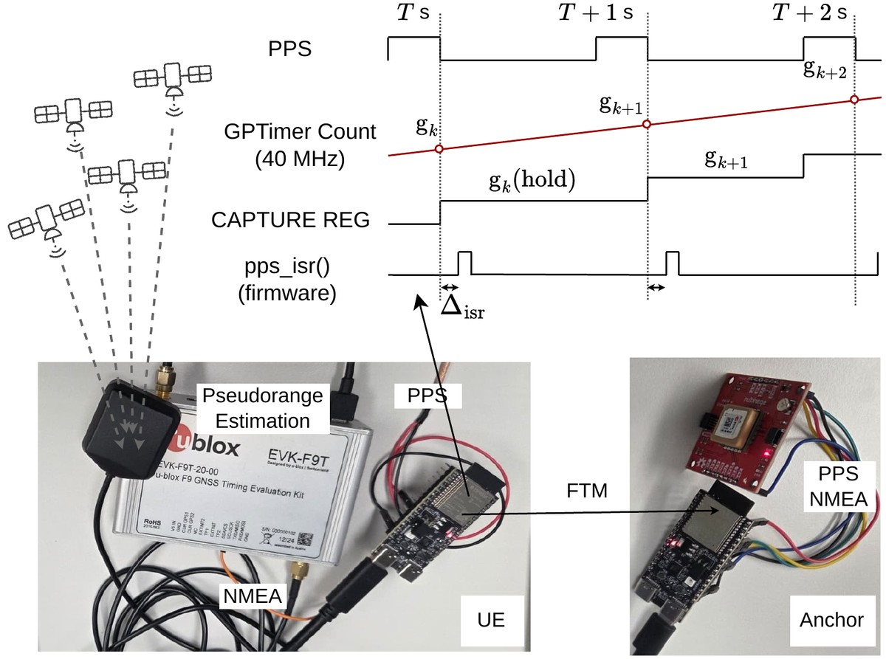

UE and anchor test setup with GNSS timing.
Scalable and Verifiable Positioning (ComPASS)
ComPASS aims to provide secure and trustworthy positioning for applications that depend on reliable location information, including autonomous systems, transportation, and location-based services. These applications are vulnerable to spoofing attacks that can manipulate reported positions and compromise safety and security. This project develops methods to detect such attacks and demonstrates their practical feasibility in terrestrial and satellite environments.